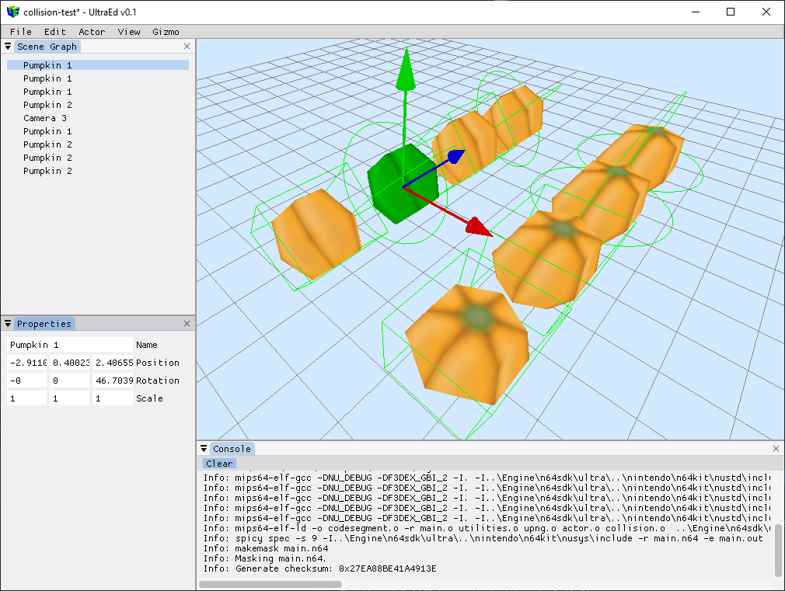

UltraEd — Nintendo 64 Game Engine & Level Editor
A from-scratch level editor and game engine targeting real Nintendo 64
hardware. Scene editing, automatic asset tracking, and a C scripting API with
actor lifecycle hooks ($Start, $Update, $Input,
$Collide). Builds run in the bundled cen64 emulator or on a console via
the 64drive flash cart. Featured on the Hacker News front page and listed in the
community-curated Awesome N64 Development index.